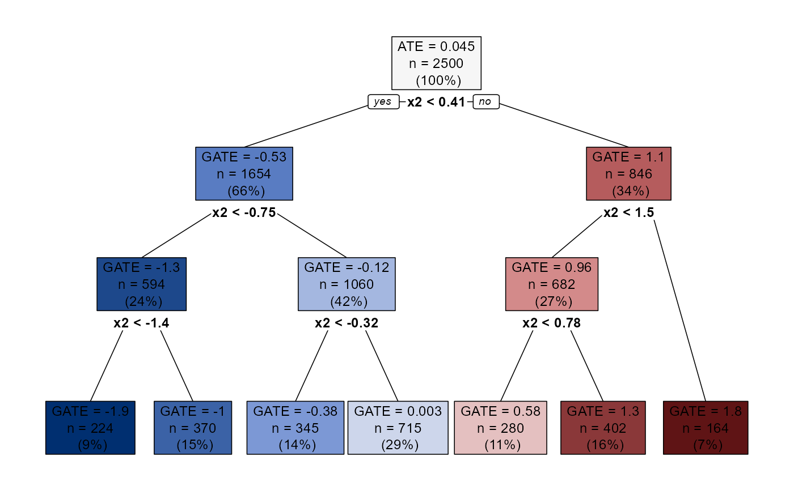

Aggregation Trees
Riccardo Di Francesco
aggTrees-vignette.RmdIntroduction
R package to implement aggregation trees, a nonparametric approach to discovering heterogeneous subgroups in a selection-on-observables framework.
The approach consists of three steps:
- Estimate the conditional average treatment effects (CATEs);
- Approximate the CATEs by a decision tree;
- Prune the tree.
This way, we generate a sequence of groupings, one for each granularity level. The resulting sequence is nested in the sense that subgroups formed at a given level of granularity are never broken at coarser levels. This guarantees consistency of the results across the different granularity levels, generally considered a basic requirement that every classification system should satisfy. Moreover, each grouping features an optimality property in that it ensures that the loss in explained heterogeneity resulting from aggregation is minimized.
Given the sequence of groupings, we can pick a particular granularity level and estimate the group average treatment effects (GATEs). In randomized experiments, an unbiased GATE estimator consists of taking the difference between the mean outcomes of treated and control units in each group. Equivalently, we can obtain the same point estimates in addition to their standard errors by estimating via OLS the following linear model:
\[\begin{equation} Y_i = \sum_{l = 1}^{|\mathcal{T_{\alpha}}|} L_{i, l} \, \gamma_l + \sum_{l = 1}^{|\mathcal{T}_{\alpha}|} L_{i, l} \, D_i \, \beta_l + \epsilon_i \end{equation}\]
with \(|\mathcal{T}_{\alpha}|\) the number of leaves of a particular tree \(\mathcal{T}_{\alpha}\), and \(L_{i, l}\) a dummy variable equal to one if the \(i\)-th unit falls in the \(l\)-th leaf of \(\mathcal{T}_{\alpha}\). Exploiting the random assignment to treatment, we can show that each \(\beta_l\) identifies the GATE in the \(l\)-th leaf.
However, in observational studies this estimator is biased due to the selection into treatment. To get unbiased estimates, we can construct via \(K\)-fold cross-fitting the following doubly-robust scores:
\[\begin{equation*} \Gamma_i = \mu \left( 1, X_i \right) - \mu \left( 0, X_i \right) + \frac{D_i \left[ Y_i - \mu \left( 1, X_i \right) \right]}{p \left( X_i \right)} - \frac{ \left( 1 - D_i \right) \left[ Y_i - \mu \left( 0, X_i \right) \right]}{1 - p \left( X_i \right)} \end{equation*}\]
where \(\mu \left(D_i, X_i \right) = \mathbb{E} \left[ Y_i | D_i, Z_i \right]\) is the conditional mean of \(Y_i\) and \(p \left( X_i \right) = \mathbb{P} \left( D_i = 1 | X_i \right)\) is the propensity score. Consider the following linear model:
\[\begin{equation} \widehat{\Gamma}_i = \sum_{l = 1}^{|\mathcal{T}_{\alpha}|} L_{i, l} \, \beta_l + \epsilon_i \end{equation}\]
As before, we can show that each \(\beta_l\) identifies the GATE in the \(l\)-th leaf, this time even in observational studies. Importantly, the OLS estimator \(\hat{\beta}_l\) of \(\beta_l\) is root-\(n\) consistent and asymptotically normal, provided that the product of the convergence rates of the estimators of the nuisance functions \(\mu \left( \cdot, \cdot \right)\) and \(p \left( \cdot \right)\) is faster than \(n^{1/2}\).
However, GATE estimates may show some bias if we use the same data to construct the tree and to estimate the models above, leading to invalid inference. One way out is to grow “honest” aggregation trees. Honesty is a subsample-splitting technique that requires that different observations are used to form the subgroups and estimate the GATEs. For this purpose, we split the observed sample into a training sample \(\mathcal{S}^{tr}\) and an honest sample \(\mathcal{S}^{hon}\) of arbitrary sizes. We use \(\mathcal{S}^{tr}\) to estimate the CATEs and construct the tree and, for a particular grouping \(\mathcal{T}_{\alpha}\), we use \(\mathcal{S}^{hon}\) to estimate the models above. This way, the asymptotic properties of the estimators discussed above are the same as if the groupings had been exogenously given. This allows us to use the estimated standard errors to conduct inference about the GATEs using standard methods, e.g., by constructing conventional confidence intervals.
Installation
The package can be downloaded from CRAN:
install.packages("aggTrees")Alternatively, the current development version of the package can be
installed using the devtools package:
devtools::install_github("riccardo-df/aggTrees") # run install.packages("devtools") if needed.Usage Examples
This section demonstrates how to use the package. Let us generate some data:
## Generate data.
set.seed(1986)
n <- 5000
k <- 3
X <- matrix(rnorm(n * k), ncol = k)
colnames(X) <- paste0("x", seq_len(k))
D <- rbinom(n, size = 1, prob = 0.5)
mu0 <- 0.5 * X[, 1]
mu1 <- 0.5 * X[, 1] + X[, 2]
y <- mu0 + D * (mu1 - mu0) + rnorm(n)Constructing the Sequence of Groupings
The build_aggtree function can be used to construct the
sequence of groupings. This function estimates the CATEs internally via
a causal
forest and approximates them by a decision tree. Then, it computes
node predictions (i.e., the GATEs) by either taking the difference
between the mean outcomes of treated and control units in each node or
constructing and averaging doubly-robust scores, according to the
method argument. By default, build_aggtree
implements honesty.
## Construct sequence of groupings. CATEs estimated internally.
groupings <- build_aggtree(y, D, X, method = "aipw") # We set 'method = "aipw"' to construct and average doubly-robust scores.
## Print.
print(groupings)
#> Honest estimates: TRUE
#> n= 2500
#>
#> node), split, n, deviance, yval
#> * denotes terminal node
#>
#> 1) root 2500 2380.264000 0.045018990
#> 2) x2< 0.4111544 1654 623.407600 -0.529343000
#> 4) x2< -0.7479499 594 61.023280 -1.313696000
#> 8) x2< -1.40893 224 3.623873 -1.929331000 *
#> 9) x2>=-1.40893 370 11.294270 -1.003363000 *
#> 5) x2>=-0.7479499 1060 82.638300 -0.120887400
#> 10) x2< -0.3224095 345 8.867871 -0.380943400 *
#> 11) x2>=-0.3224095 715 16.486690 0.002983327 *
#> 3) x2>=0.4111544 846 199.306000 1.087667000
#> 6) x2< 1.534637 682 43.075580 0.961647100
#> 12) x2< 0.7833315 280 3.750833 0.583637500 *
#> 13) x2>=0.7833315 402 6.551331 1.261884000 *
#> 7) x2>=1.534637 164 4.632625 1.772559000 *
## Plot.
plot(groupings) # Try also setting 'sequence = TRUE'.
To use a different CATE estimator, we can use the cates
argument. When this is the case, we also need to specify
is_honest, a logical vector denoting which observations we
allocated to the honest sample. This way, build_aggtree
knows which observations must be used to construct the tree and compute
node predictions.
## Estimate the CATEs.
splits <- sample_split(length(y), training_frac = 0.5)
training_idx <- splits$training_idx
honest_idx <- splits$honest_idx
y_tr <- y[training_idx]
D_tr <- D[training_idx]
X_tr <- X[training_idx, ]
y_hon <- y[honest_idx]
D_hon <- D[honest_idx]
X_hon <- X[honest_idx, ]
library(grf)
forest <- causal_forest(X_tr, y_tr, D_tr) # Use training sample.
cates <- predict(forest, X)$predictions
## Use the arguments 'cates' and 'is_honest'.
groupings <- build_aggtree(y, D, X, method = "aipw",
cates = cates, is_honest = 1:length(y) %in% honest_idx)GATEs Estimation and Inference
Now we have a whole sequence of optimal groupings. We can pick the
grouping associated with our preferred granularity level and run some
analysis. First, we would like to get standard errors for the GATEs.
This is achieved by estimating via OLS appropriate linear models using
the honest sample (see the Introduction above). Then, we can assess
whether we find systematic heterogeneity by testing a bunch of
hypotheses. For example, we can use the standard errors to test the
hypotheses that the differences in the GATEs across all pairs of leaves
equal zero. If evidence of heterogeneity is found, we can investigate
the mechanisms behind by computing the average characteristics of the
units in each group. All of this is done by the
inference_aggtree function.
## Inference with 4 groups.
results <- inference_aggtree(groupings, n_groups = 4)To help the user report the results, the package allows us to print nice LATEX tables.
print(results, table = "diff")
#> \begingroup
#> \setlength{\tabcolsep}{8pt}
#> \renewcommand{\arraystretch}{1.2}
#> \begin{table}[b!]
#> \centering
#> \begin{adjustbox}{width = 0.85\textwidth}
#> \begin{tabular}{@{\extracolsep{5pt}}l c c c c}
#> \\[-1.8ex]\hline
#> \hline \\[-1.8ex]
#>
#> & \textit{Leaf 1} & \textit{Leaf 2} & \textit{Leaf 3} & \textit{Leaf 4} \\
#> \addlinespace[2pt]
#> \hline \\[-1.8ex]
#>
#> \multirow{2}{*}{GATEs} & -1.419 & -0.174 & 0.778 & 1.506 \\
#> & [-1.597, -1.241] & [-0.294, -0.054] & [0.606, 0.95] & [1.267, 1.745] \\
#>
#> \addlinespace[2pt]
#> \hline \\[-1.8ex]
#>
#> \textit{Leaf 1} & NA & NA & NA & NA \\
#> & (NA) & (NA) & (NA) & (NA) \\
#> \textit{Leaf 2} & 1.245 & NA & NA & NA \\
#> & (0) & (NA) & (NA) & (NA) \\
#> \textit{Leaf 3} & 2.197 & 0.952 & NA & NA \\
#> & (0) & (0) & (NA) & (NA) \\
#> \textit{Leaf 4} & 2.925 & 1.681 & 0.729 & NA \\
#> & (0) & (0) & (0) & (NA) \\
#>
#> \addlinespace[3pt]
#> \\[-1.8ex]\hline
#> \hline \\[-1.8ex]
#> \end{tabular}
#> \end{adjustbox}
#> \caption{Point estimates and $95\%$ confidence intervals for the GATEs. Leaves are sorted in increasing order of the GATEs. Additionally, differences in the GATEs across all pairs of leaves are displayed. p-values to test the null hypothesis that a single difference is zero are adjusted using Holm's procedure and reported in parenthesis under each point estimate.}
#> \label{table:differences.gates}
#> \end{table}
#> \endgroup
print(results, table = "avg_char")
#> \begingroup
#> \setlength{\tabcolsep}{8pt}
#> \renewcommand{\arraystretch}{1.1}
#> \begin{table}[b!]
#> \centering
#> \begin{adjustbox}{width = 1\textwidth}
#> \begin{tabular}{@{\extracolsep{5pt}}l c c c c c c c c }
#> \\[-1.8ex]\hline
#> \hline \\[-1.8ex]
#> & \multicolumn{2}{c}{\textit{Leaf 1}} & \multicolumn{2}{c}{\textit{Leaf 2}} & \multicolumn{2}{c}{\textit{Leaf 3}} & \multicolumn{2}{c}{\textit{Leaf 4}} \\\cmidrule{2-3} \cmidrule{4-5} \cmidrule{6-7} \cmidrule{8-9}
#> & Mean & (S.D.) & Mean & (S.D.) & Mean & (S.D.) & Mean & (S.D.) \\
#> \addlinespace[2pt]
#> \hline \\[-1.8ex]
#>
#> \texttt{x1} & 0.047 & (0.041) & -0.008 & (0.031) & 0.04 & (0.041) & 0.071 & (0.055) \\
#> \texttt{x2} & -1.368 & (0.021) & -0.177 & (0.01) & 0.743 & (0.01) & 1.71 & (0.026) \\
#> \texttt{x3} & 0.075 & (0.043) & -0.002 & (0.03) & 0.021 & (0.042) & 0.037 & (0.06) \\
#>
#> \addlinespace[3pt]
#> \\[-1.8ex]\hline
#> \hline \\[-1.8ex]
#> \end{tabular}
#> \end{adjustbox}
#> \caption{Average characteristics of units in each leaf, obtained by regressing each covariate on a set of dummies denoting leaf membership. Standard errors are estimated via the Eicker-Huber-White estimator. Leaves are sorted in increasing order of the GATEs.}
#> \label{table:average.characteristics.leaves}
#> \end{table}
#> \endgroupReferences
Athey, S., & Imbens, G. W. (2016). Recursive Partitioning for Heterogeneous Causal Effects. Proceedings of the National Academy of Sciences, 113(27). [paper]
Athey, S., Tibshirani, J., & Wager, S. (2019). Generalized Random Forests. Annals of Statistics, 47(2). [paper]
Chernozhukov, V., Demirer, M., Duflo, E., & Fernandez-Val, I. (2017). Generic Machine Learning Inference on Heterogeneous Treatment Effects in Randomized Experiments. National Bureau of Economic Research. [paper]
Di Francesco, R. (2022). Aggregation Trees. CEIS Research Paper, 546. [paper]
Holm, S. (1979). A Simple Sequentially Rejective Multiple Test Procedure. Scandinavian Journal of Statistics, 6(2). [paper]
Semenova, V., & Chernozhukov, V. (2021). Debiased Machine Learning of Conditional Average Treatment Effects and Other Causal Functions. The Econometrics Journal, 24(2). [paper]